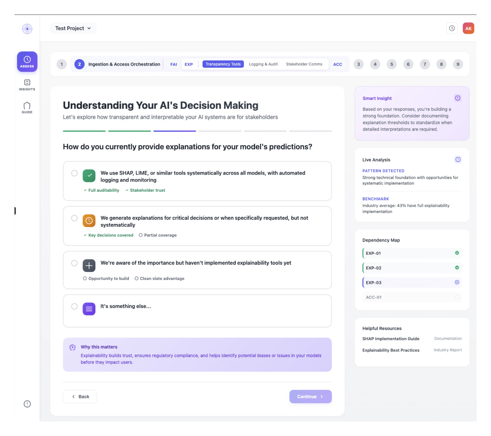
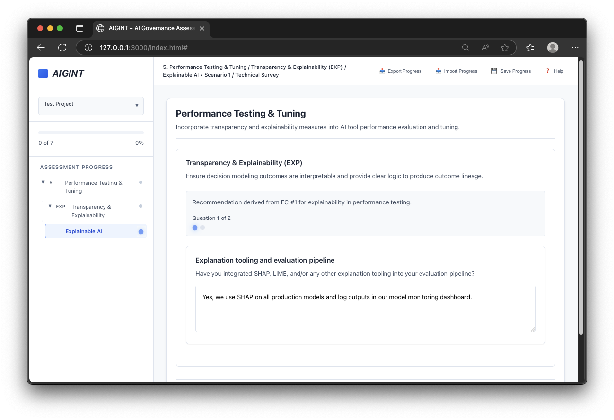
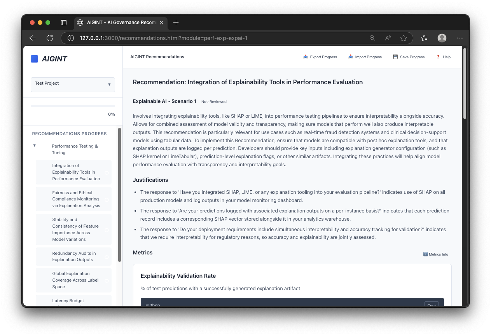
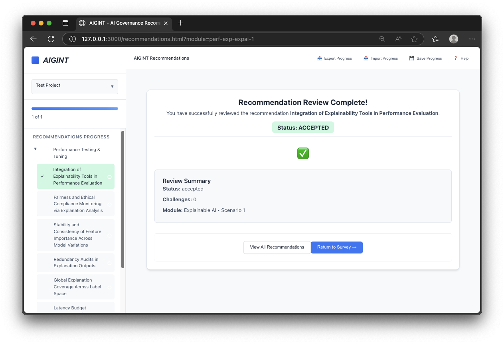

Design Story · AI-assisted practice & speed
A services company’s first product.
AIGINT was an AI-governance platform built inside a services company that had never shipped one of its own. I led the UX strategy and interaction design — competitive research, a modular architecture for customized deployments, and the full working UI prototype — and took it from a large, unstructured body of documentation to a product that earned signed client commitments before launch.

The setup
A services company that had built plenty for its clients set out to build something of its own: AIGINT, an AI-governance platform for enterprise teams. I led the UX strategy and interaction design — competitive research, a modular service architecture to support customized deployments, the full working UI prototype, and the design principles for handing off from consultant to app.
From documentation to a working product
The starting point was a large, unstructured body of internal documentation. In a month it was a clickable prototype; a couple of months later, a working one — users could step through governance topics and export a generated PDF report. I vibe-coded the front end with Claude in VS Code, which let a very small team move at a pace a small team usually can’t.
What it proved
The prototype was compelling enough to secure signed client commitments — about $1.1M — before launch. It was ultimately not carried to market. What it demonstrated stands on its own: how fast AI-assisted design can take an idea from raw documentation to a product customers will commit to.
Walking through the prototype


